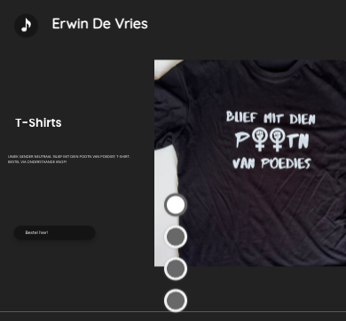
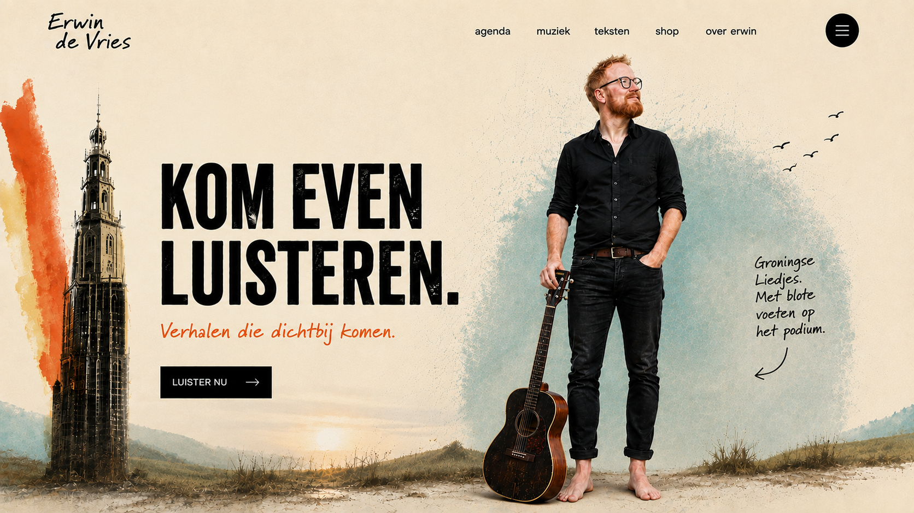
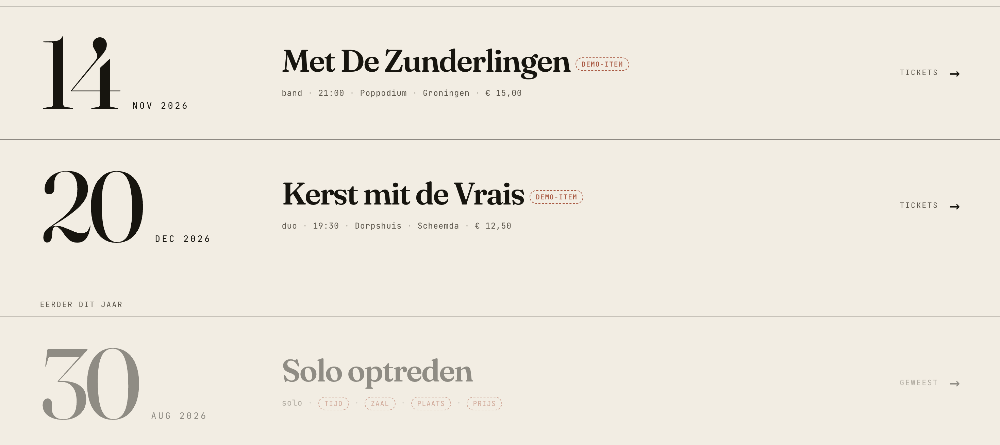
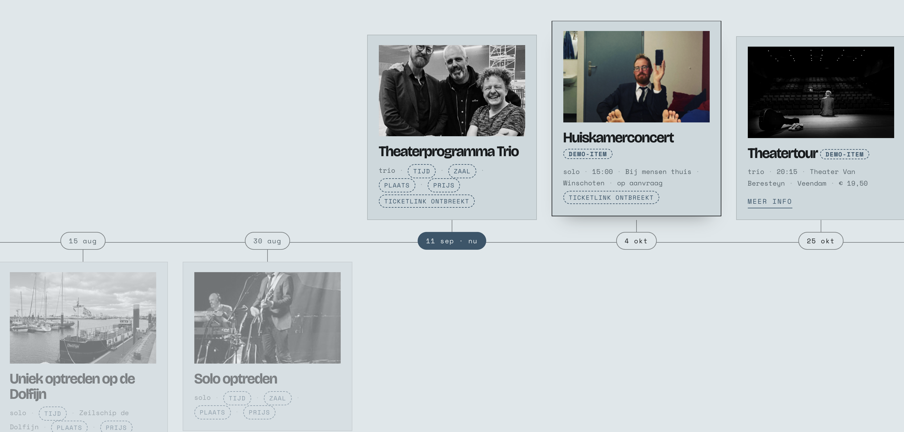
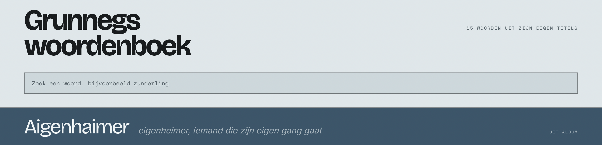
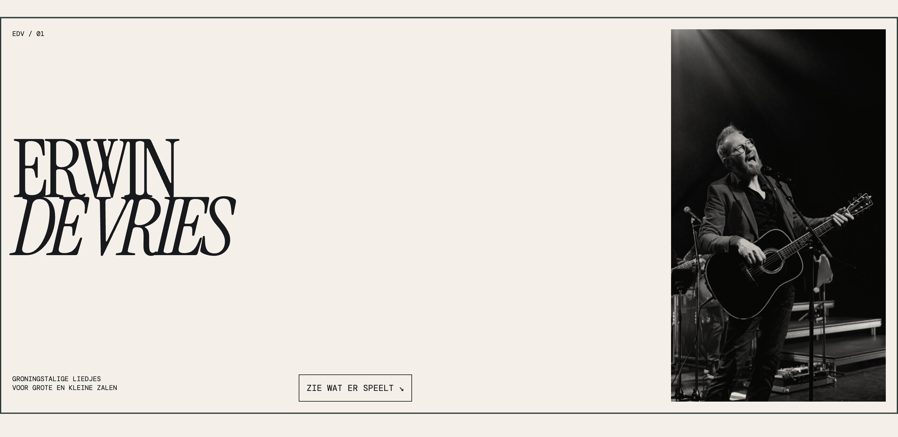
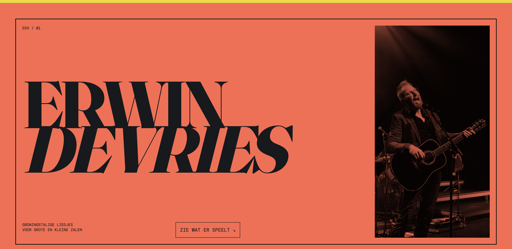
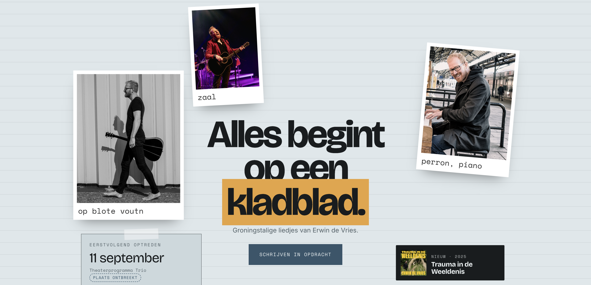
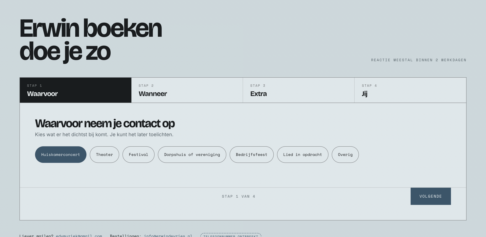

Website transformatie
voor Erwin de Vries
Eén overzichtelijke plek waar je muziek, je agenda, je teksten en je shop samenkomen. Op maat gebouwd, geen sjabloon.
Het idee
Wat er in de zaal gebeurt,
gebeurt online nog niet.
Van een huiskamer met dertig mensen tot een theaterzaal: het werkt omdat er iemand staat. Een verhaal, een taal die dichtbij komt, en een zaal die stil wordt op het juiste moment.
Online blijft daar weinig van over. Een agenda, een paar knoppen, een formulier. Dat is geen podium, dat is een prikbord.
De website mag dezelfde eerste indruk maken als de eerste minuut van een optreden. Je weet meteen wie er staat en waar het over gaat. Daarna kun je zo diep gaan als je zelf wil: een lied luisteren, een tekst lezen, een datum zoeken, een cd bestellen.
En dat alles op één pagina, in een volgorde die klopt. Wie binnenkomt hoeft niets uit te zoeken. Dat is geen concessie aan het idee, dat is het idee.
Kleurrijk, maar met rust eromheen. Deze drie dragen de site, zwart-wit fotografie doet de rest.
Huidige situatie
Er staat al veel goeds.
Het zit alleen vast.
De fotografie is sterk en de teksten zijn goed. En je hebt iets wat bijna geen andere artiest heeft: een eigen taal. Die Groningse identiteit is je grootste onderscheid, alleen komt hij er nu nog lang niet overal uit. Dat is het waardevolle deel, dat gaat mee en dat gaat harder meedoen.
Wat eronder zit, werkt niet meer mee. Vier dingen vallen op.
De site draait op WordPress met een flinke stapel plug-ins eromheen. Een datum wijzigen gaat via schermen die niet voor jou gemaakt zijn, en op een telefoon is het bijna niet te doen. Juist onderweg, als er een optreden bij komt, werkt het het slechtst.
Het menu is er niet, teksten lopen buiten het scherm en een knop als "Bestel hier" kan zo klein worden dat je hem nauwelijks ziet staan. De meeste bezoekers komen via social media en dus via hun telefoon. Dit soort onderdelen moeten er gewoon uit.
Op een telefoon duurt het bijna vijftien seconden voordat het hoofdbeeld in beeld staat. Dat komt doordat elke pagina bijna 5 MB aan bestanden binnenhaalt, waarvan 3,5 MB alleen aan foto's op volle grootte. Daar bovenop laden tientallen losse stijl- en scriptbestanden van de plug-ins. Zolang die stapel er is, blijft de site langzaam.
Alles staat verspreid over losse pagina's, zonder duidelijke volgorde. Wie een datum, een lied of een cd zoekt, moet gokken waar het staat. Dat is precies wat een one-pager oplost.
Meting van Google, op een telefoon. Het groene streepje is de norm: 90. Vertaald: je site laat bezoekers te lang wachten, is lastig te bedienen en is technisch achterstallig.
Mensen vinden je wel. De ervaring op de site bepaalt of ze blijven of wegklikken.

Dit is het eerste wat een bezoeker op zijn telefoon ziet. Het beeld loopt buiten het scherm, de tekst is niet te lezen en de bestelknop valt weg. Het gaat mis op de plek waar je maar één keer een eerste indruk maakt.
De website
Eén pagina die je van boven
naar beneden uitleest.
De homepage is geen inhoudsopgave. Je scrolt er doorheen en je hebt het gehad: wie er staat, wanneer hij speelt, wat hij schrijft en wat er te koop is.
Wie meer wil, klikt door vanuit zo'n blok. Het Grunnegs woordenboek is daarbij de ingang naar de muziek. Daarin staat niet alleen wat een woord betekent, maar ook de gedachte erachter: waarom dat woord in dat lied staat en wat je ermee bedoelde. Van daaruit loopt het door naar de tekst, het nummer en het album, zodat er langzaam een catalogus van je werk ontstaat in plaats van een stapel losse pagina's.
De volgorde hiernaast ligt nog niet vast. Of de agenda boven het stuk over jezelf komt of eronder, bepalen we zodra de inhoud er ligt. De blokken zelf blijven hetzelfde.

Een concept, geen ontwerp. Het laat zien welke richting mogelijk is: de Martinitoren, het Groninger landschap, de gitaar en de blote voeten op het podium. Geen bannerfoto met een menubalk erboven, maar een beeld dat verder niemand kan hebben.
Concept · niet definitiefAgenda
Een optreden erbij,
ook vanaf je telefoon.
Een agenda is alleen wat waard als hij klopt. En hij klopt alleen als bijwerken net zo makkelijk gaat als een appje sturen, op het moment dat de datum bekend wordt.
Je krijgt daarom een eigen scherm waarin je een optreden invoert. Je vult in wat er bekend is, je slaat op, en het staat er meteen netjes op. Geen mail naar mij, geen wachten. Dat scherm werkt gewoon op een telefoon, want daar gebeurt het meestal.
20:30 · € 15,00
Voorbeeld met verzonnen gegevens.
Wat er in dat scherm staat, bepalen we samen. Omdat de site helemaal zelf gebouwd wordt en niet uit een pakket komt, zit je nergens aan vast. Wil je later ook je eigen teksten, een prijs in de shop of een foto op de homepage kunnen wijzigen, dan zetten we dat er gewoon bij. Alleen de dingen die je echt zelf wil doen, en niets meer, zodat het scherm overzichtelijk blijft.
Hoe de agenda er vervolgens uitziet, ligt nog open. Twee richtingen hieronder. Ook wat er met een optreden gebeurt dat geweest is, kiezen we later: verdwijnen, of blijven staan zodat je ziet hoeveel je speelt.

Als lijst: grote datums, alles in één oogopslag, rustig om doorheen te lopen.
Concept · niet definitief
Of als tijdlijn met foto's erbij. Speelser, en leuker zodra er veel op de planning staat.
Concept · niet definitiefMuziek en teksten
De muziek in het midden,
niet onderaan.
Het werk zelf hoort de hoofdrol te hebben. Niet als bijlage onder de agenda, maar als het deel waar je het langst blijft hangen.
Alle teksten kunnen mee. Elke tekst krijgt zijn eigen plek, met het nummer erbij, zodat je kunt luisteren terwijl je meeleest. Iemand die op een regel zoekt, komt zo rechtstreeks bij jou uit.
Bij elkaar op één plek, met de hoezen erbij en een speler als je dat wil. Wat er nu verspreid staat, staat straks als één overzicht bij elkaar.
Tien tot vijftien woorden uit je liedjes, met wat ze betekenen en waarom ze daar staan. Voor iemand uit Groningen is dat herkenning, voor iemand van buiten is het precies de reden om te blijven lezen. En het is het soort onderdeel dat geen enkele andere artiestensite heeft.

Een eerste beeld bij het woordenboek. Hoe het er precies uit komt te zien en hoeveel woorden erin gaan, bepalen we samen.
Concept · niet definitiefWebshop
Verkopen zonder dat iemand
de site hoeft te verlaten.
Voor nu zijn dat de cd's en het t-shirt. Een kleine winkel, en dat is precies genoeg. Belangrijker is wat het straks moet doen: als het boek er is, hoeft er niets opgetuigd te worden. Dan zet je het erin en het staat er.
Daarom bouwen we hem nu, en niet pas bij de lancering. Een winkel die al een tijdje draait en waarin al eens iets besteld is, werkt op de dag dat het moet.
De shop hoort bij de site. Dezelfde wereld, dezelfde toon, geen aparte omgeving waar bezoekers ineens in een ander ontwerp belanden. Bestellen en betalen gaat zoals iedereen dat gewend is.
Voor het boek kunnen we daarnaast vooraf een wachtlijst openen. Mensen laten weten dat ze hem willen, en jij weet ruim voor de lancering hoe groot de eerste vraag ongeveer is. Dat scheelt gokken, en op dag één heb je meteen een lijst mensen die erop zitten te wachten.
Andere richtingen
Dezelfde site kan er
heel anders uitzien.
Het beeld hiervoor is één richting, niet de enige. Hieronder een paar andere opties, zodat je ziet hoe ver het uit elkaar kan liggen. Allemaal concepten. We kiezen samen een richting en die werk ik daarna uit.

Rustiger en typografisch: je naam doet het werk, veel wit, één sterke foto ernaast.
Concept · niet definitief
Dezelfde opbouw, maar dan in kleur. Zo kan de site later ook per album of seizoen van jas wisselen.
Concept · niet definitief
Voor liedjes in opdracht, waarin mensen een lied kunnen aanvragen voor een bijzondere gelegenheid. Een pagina die eruitziet als het werk zelf: kladpapier, foto's die scheef hangen, aantekeningen.
Concept · niet definitief
Contact in een paar korte stappen in plaats van een lang formulier. Een aanvraag komt zo compleet binnen en je weet meteen waar het over gaat.
Concept · niet definitiefInvestering
Twee opties.
Verder geen kleine lettertjes.
- Eén overzichtelijke pagina met alles erop
- Agenda die je zelf bijhoudt, ook op je telefoon
- Liedteksten, albums en het Grunnegs woordenboek
- Contact en aanvragen op één plek
- Ontwerp en bouw, volledig op maat
- Alles uit de eerste optie
- Webshop voor de cd's en het t-shirt
- Bestellen en betalen zoals mensen gewend zijn
- Klaar voor het boek, zonder later verbouwen
- Wachtlijst om de vraag vooraf te peilen
Hosting: €25 excl. p/m. Daarmee staat de site online en kun je zelf aanpassingen blijven doen. De hosting wordt ingericht op wat deze site nodig heeft, niet op een standaardpakket. Daar komt de snelheid voor een groot deel vandaan.
Oplevering binnen 2 wekenTot slot
Zullen we beginnen?
Wat er in een zaal gebeurt, kun je niet namaken. Wel kun je zorgen dat iemand die je daarna opzoekt hetzelfde gevoel krijgt, in plaats van een pagina die blijft laden.